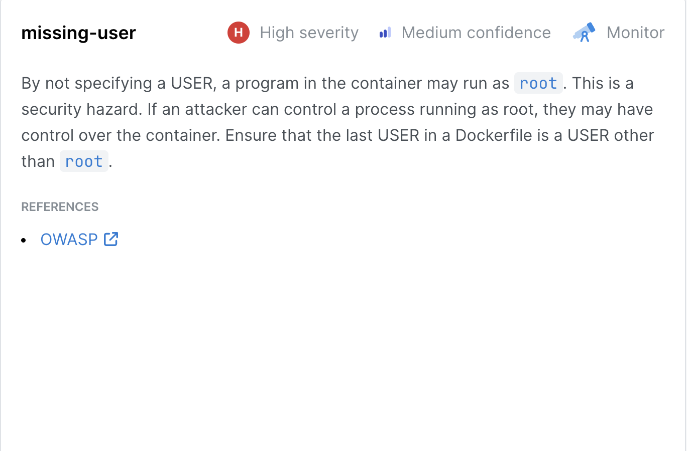

Semgrep in CI/CD: Developer-Friendly Security with Room to Grow
By Sedat Altun
During my internship with IT Society, I had the opportunity to work with Semgrep, an open-source static analysis tool...
🔍 What Makes Semgrep Special?
Semgrep’s strength is in its simplicity...
⚙️ CI/CD Integration Walkthrough
We used GitHub Actions...
on: [push, pull_request]
jobs:
semgrep:
runs-on: ubuntu-latest
steps:
- uses: actions/checkout@v2
- uses: returntocorp/semgrep-action@v1
with:
config: auto
Within seconds, developers would see inline comments...
📷 Real Example: Detecting a NoSQL Injection Risk

This screenshot shows Semgrep flagging a critical vulnerability...
🧪 Beyond Code: SCA (Software Composition Analysis)
Semgrep also offers SCA functionality...
- Common Vulnerabilities and Exposures (CVEs)
- Outdated dependencies
- Supply chain risks
This is crucial in environments like JavaScript and Python...
This finding highlights a high-severity Docker risk where containers may run as root if a non-root user isn't explicitly declared.
Here, Semgrep detected disabled HTML escaping. If user input hits this path, it opens the door to XSS. Tiny misconfigs like this can lead to big vulnerabilities.
💬 My Thoughts...
Semgrep is one of the most developer-friendly tools I’ve encountered...
🎓 What I Took Away
This experience gave me more than just exposure to a tool—it helped me internalize what it means to “shift left” in security...
← Back to Blog